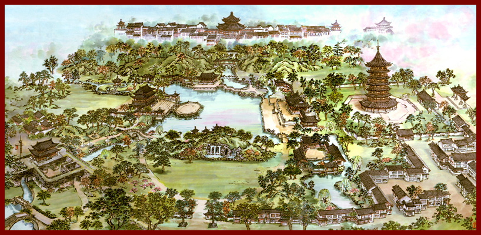
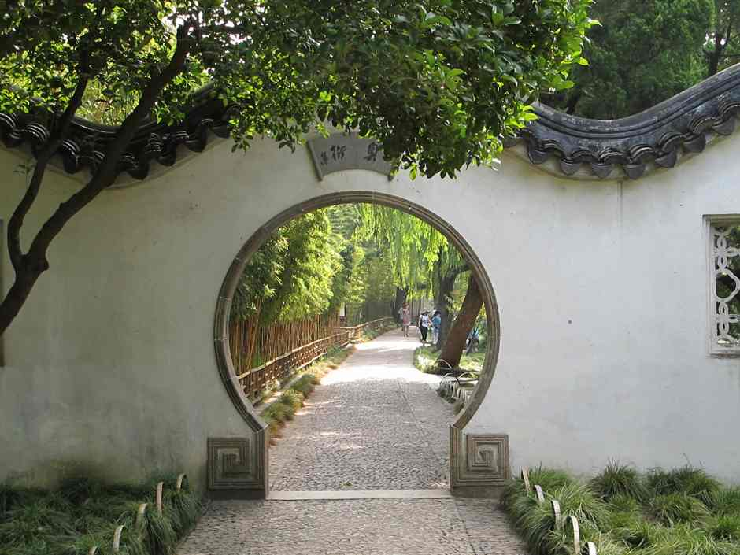
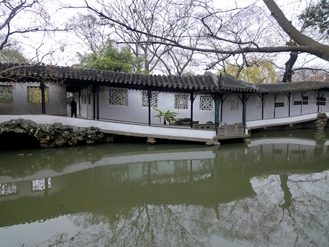

History

The Humble Administrator’s Garden was initially constructed in 1509 ce, during the Ming dynasty (1368–1644 ce). During this time, there was a distinct cultural divide between northern and southern china, especially when it came to garden design.

The city it is in, Suzhou, was actually at this time the more prosperous part of the country. Politicians would grow up here, leave to the northern capital of Beijing to work, and then return to Suzhou later in life to retire. As such, southern Chinese gardens in general rejected confucian ideals of order that these politicians had been subject to their entire lives. Northern chinese gardens assert extravagance, luxury, and order. Southern gardens however were more ‘playful’ than utilitarian. Emphasis was placed on the unusual and the unexpected.
Key Elements of Southern Chinese Gardens
Water
‘Without water, the garden will lack spirit’. Water allows reflection of the surroundings, and gives a feeling of serenity and contemplativeness. Contrastingly, moving water can give a sense of liveliness and melody Finally, water is functional, as it helps regulate humidity and temperature within the garden.
Rocks
Formations of rocks are perfect for dividing and organizing sections of the garden. They can be used to camouflage artificial sections, and make the garden feel more natural. They can also be integrated into existing structures as supports.
Buildings
Buildings of southern chinese gardens do not always follow the regimented symmetry of their northern brethren. They are able to adopt more flexible shapes, and allow air and people to move freely in and out. The color and decoration of these buildings should not be overbearing, as it is usually subordinate to the landscape.
Moon Gate

This moon gate links the western and central gardens. This structure is highly symbolic within chinese culture, and is a common feature as an entryway.
One interpretation is that is represents the cyclical nature of the world. The portal itself is a circle, through which people come and go in a cycle. The sloping roof is supposed to represent the half moon of the chinese summer, connecting it into the cycle of the seasons. The slopes of the roof can also be seen as the flow of waves, air, or time. All of these connect into the Taoist philosophy of cycles of change, like those of the dynasties.
Other than the portal, the flat stone wall is only penetrated by two ‘leaking windows’. These windows are filled with decorative patterns, and only give the user a tiny glimpse of the other side of the wall. This helps build anticipation for when they pass through to the other side.
Wandering Pathway

This structure incorporates a few common elements of the garden. Firstly, it’s zigzagging path give the user a variety of views of the garden. It also works to slow down their pace, making the journey across more meditative.
The way the pathway dips down to the water adds to this effect. It seems like it is bending under its own weight, supported only by the natural rock formations on either side. The path must submit to the forces of nature. This dip also serves the practical purpose of allowing the user to get closer to the pond to feed the ducks.
The wall of the path is dotted with more ‘leaking windows’, giving glimpses to the central part of the garden. You can see that each window has a unique pattern, adding to the irregular and organic feel of the pathway.